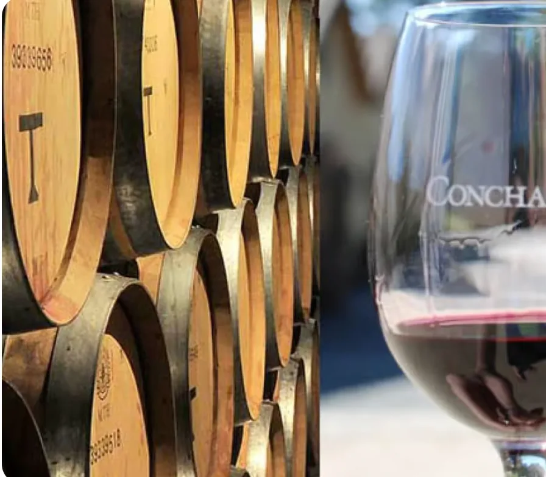
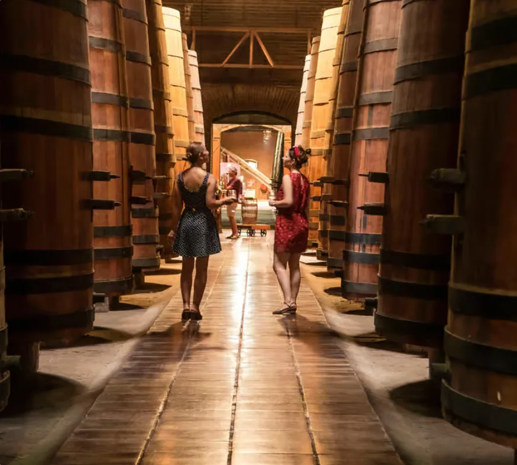
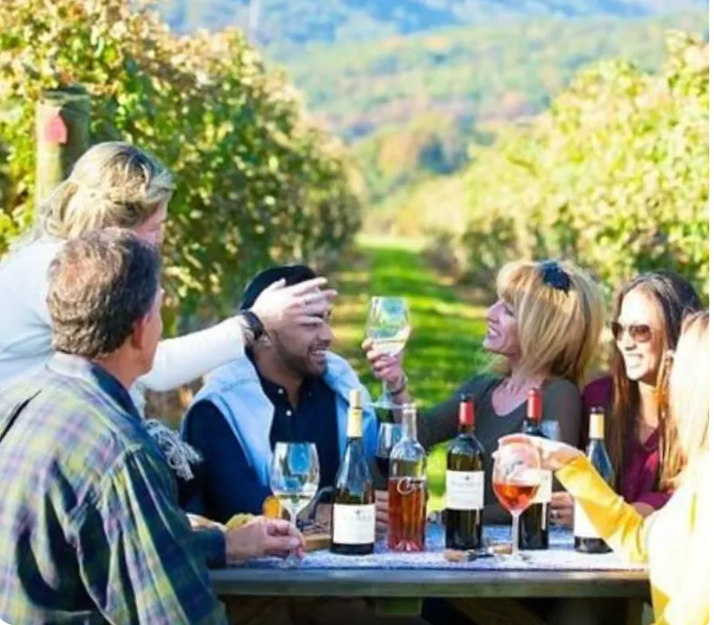

1–2 hours
Viña Aquitania
Boutique, inside Santiago, small group and Andes views.
Book on GetYourGuide →Santiago makes wine easy to fit into very different itineraries: 90 minutes inside the city, half a day in Pirque or a full day in the valleys. Rather than rank wineries, compare the experience that fits your schedule.
Boutique, inside Santiago, small group and Andes views.
Book on GetYourGuide →
The classic Pirque experience with history, gardens and tasting.
Book on GetYourGuide →
For travelers who want to dedicate the day to different producers and terroirs.
Explore wine tours →
A strong option when you want to connect wine with Valparaíso and Viña del Mar.
Book on GetYourGuide →Aquitania fills a short opening without leaving the city; Concha y Toro turns wine into a half-day excursion. They belong side by side rather than in a winner-takes-all ranking.
Wine tastings are adult experiences; check the provider rules before booking.
| Short on time | Viña Aquitania | ~1.5 h | Inside Santiago |
| Classic first experience | Concha y Toro | ~4–5 h with transfer | Pirque / Maipo |
| Wine-focused day | Maipo circuit | Full day | Maipo Valley |
| Scenery + food | Casablanca | Full day | Casablanca Valley |
| Wine + coast | Casablanca + Valparaíso/Viña | Full day | Coast + wine |
Prices, schedules and inclusions vary by date and option. Check current availability through the buttons instead of relying on fixed prices on this page.
Inside Santiago · short format
GetYourGuide →Concha y ToroPirque · transfer options
GetYourGuide →Casablanca + coastWine + Pacific
GetYourGuide →More wine toursCompare available options
GetYourGuide →Some links may generate a commission for Lipe Travel Show without changing the price paid by the traveler.